Navega rápido por cualquier tema
Qué es este sistema y para qué te sirve
Es una aplicación web hecha para controlar todo el inventario de materia prima de la fábrica de pan. Te permite saber, en cualquier momento y desde cualquier computador con navegador, cuánto hay de cada producto, qué entró, qué salió, y cuándo es hora de pedir más.
Está diseñado para una sola persona encargada del inventario, pero permite que distintos roles (administración, operadores, personal de entradas y de salidas) trabajen sobre la misma base de datos sin pisarse unos a otros.
Cómo entrar y moverte por el sistema
Al abrir el sistema en el navegador verás la pantalla de inicio de sesión. Ingresa tu usuario y contraseña y pulsa Ingresar.
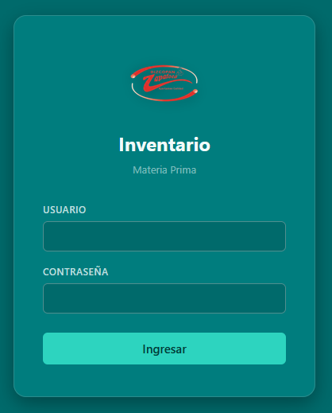
Cada usuario tiene un rol que define lo que puede hacer. Esto evita errores y mantiene el control.
admin
Acceso total: usuarios, configuración, edición y anulación de entradas/salidas, todos los reportes y auditoría.
operador
Todo excepto la gestión de usuarios. Puede registrar entradas, salidas, ajustes y ver reportes.
entradas
Solo stock, entradas y ajustes. Ideal para el personal que recibe la mercancía.
salidas
Solo stock, salidas y ajustes. Ideal para el personal que despacha a producción/empaque.
Una vez dentro, verás siempre la barra lateral izquierda con todos los módulos del sistema, el selector de bodega y el botón para cerrar sesión.
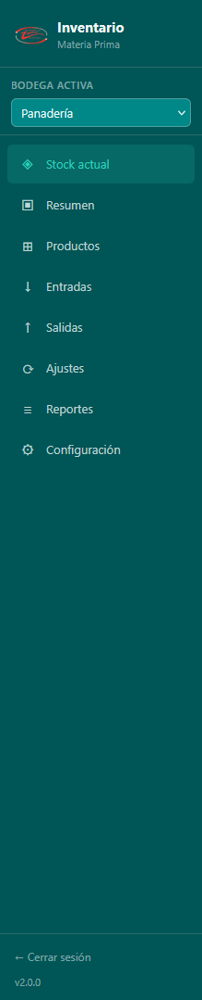
| Opción | Para qué sirve |
|---|---|
| ◈ Stock actual | Ver cuánto hay de cada materia prima ahora mismo (pantalla principal) |
| ▣ Resumen | Vista rápida: cuántos productos hay, alertas y últimos movimientos |
| ⊞ Productos | Crear, editar o desactivar materias primas |
| ↓ Entradas | Registrar lo que llega del proveedor con su factura |
| ↑ Salidas | Registrar lo que se manda a producción o empaque |
| ⟳ Ajustes | Conteo físico — corregir diferencias del sistema vs lo real |
| ≡ Reportes | Generar informes para exportar a Excel o PDF |
| ⚙ Configuración | Usuarios, datos de la empresa, IVA |
En la parte superior del sidebar hay un selector que dice "Bodega activa". El sistema maneja dos bodegas independientes: Panadería y Pastelería. Cada una tiene sus propios productos, stock, entradas, salidas y reportes.
Ideas que conviene entender antes de empezar
Todos los productos del sistema se dividen en dos grandes grupos:
Todo lo que va dentro del pan: harinas, levaduras, azúcar, mantequilla, huevos, mejorantes, sal, leche, etc.
Todo lo que envuelve o contiene el pan: bolsas, cajas, etiquetas, papel parafinado, rollos plásticos, etc.
Esta división es importante porque los reportes, salidas y ajustes se hacen por categoría. Por ejemplo, al registrar una salida primero eliges "¿a Producción o a Empaques?" y solo te aparecen los productos de esa categoría.
La harina se compra por bultos de 50 kg, pero cuando se usa en la masa, se mide en gramos o kilos. La levadura llega en cajas de 500 g pero se ocupa por gramos. Si llevas el inventario solo en "bultos", no sabes cuánto te queda real. Si lo llevas solo en kilos, perdés referencia visual.
Cada producto tiene dos unidades:
| Tipo | Qué es | Ejemplo |
|---|---|---|
| Unidad operativa | Cómo lo ves y compras todos los días | "bulto", "caja", "rollo" |
| Unidad base | La unidad pequeña en la que internamente se controla | "kg", "gramos", "unidad" |
| Factor de conversión | Cuántas unidades base hay en una unidad operativa | 1 bulto = 50 kg → factor 50 |
El sistema te avisa visualmente cuándo un producto está bajo. Hay tres estados:
| Estado | Cuándo se aplica | Qué hacer |
|---|---|---|
| ● Normal | Cuando hay más stock que el mínimo configurado | Nada, todo bien |
| ● Bajo | Cuando el stock iguala o baja del mínimo | Pedir pronto |
| ● Crítico | Cuando el stock está al 50% o menos del mínimo | Pedir ya |
Algunos empaques —típicamente los rollos de plástico— no se consumen en unidades enteras. Se pesa el rollo antes de empezar a usarlo, se pesa después, y la diferencia es lo que se consumió.
Para estos productos, en Productos hay una opción "Salida por peso diferencial (⚖ rollo)". Al activarla, al registrar una salida verás tres campos especiales:
Cada pantalla explicada en detalle
Es la pantalla principal y más usada. Te muestra de un vistazo cuánto hay de cada producto, su estado y la diferencia respecto al mínimo.
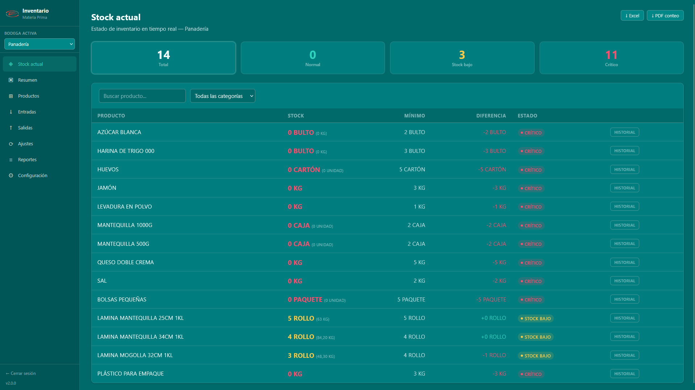
Son filtros rápidos. Haciendo clic en cada una, la tabla de abajo se filtra:
| Columna | Qué muestra |
|---|---|
| Producto | Nombre completo de la materia prima |
| Stock | Cantidad actual en unidad operativa (bultos) y al lado, en pequeño, la unidad base (kg). Clic en el número grande para alternar. |
| Mínimo | Cuánto debe haber como mínimo |
| Diferencia | Diferencia entre el stock actual y el mínimo (verde = sobra, rojo = falta) |
| Estado | Badge de color: Normal / Bajo / Crítico |
| Historial | Botón para ver todos los movimientos pasados del producto |
.xlsx en dos hojas (Producción / Empaques)Haciendo clic en el botón "Historial" de cualquier fila se abre una ventana con todos los movimientos pasados de ese producto: entradas, salidas, ajustes, con fecha, cantidad y usuario.
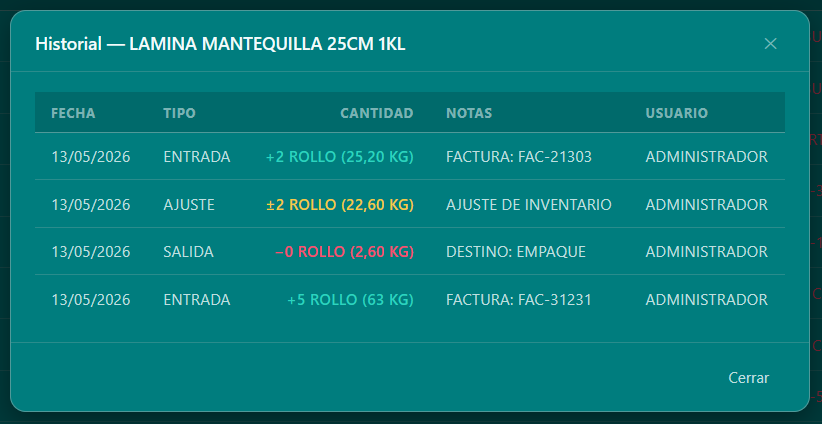
Una vista rápida con los números más importantes de la bodega activa. Útil para revisar al inicio del día.
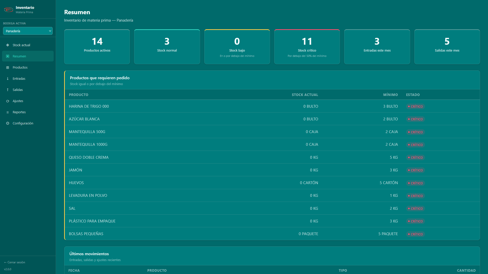
Incluye:
Aquí se administra el catálogo de materias primas. No es donde se registra el stock diario, es donde se da de alta cada producto (una vez) para que después aparezca en entradas, salidas, etc.
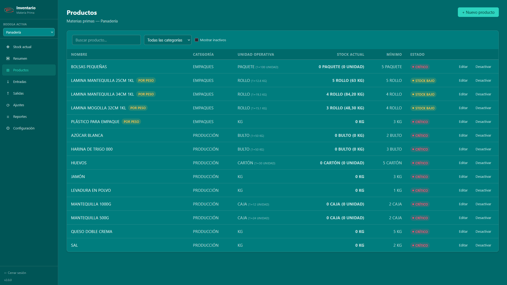
Botón + Nuevo producto arriba a la derecha. Se abre un formulario:
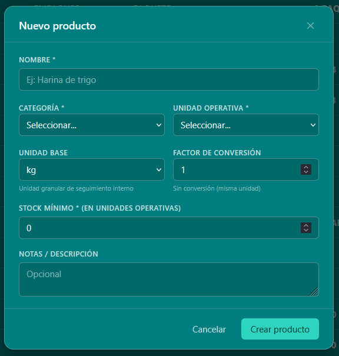
| Campo | Qué va |
|---|---|
| Nombre | Nombre claro: "Harina de trigo Haz de Oros 50 kg" |
| Categoría | Producción o Empaques |
| Unidad operativa | Cómo lo nombras tú: bulto, caja, rollo, paquete... |
| Unidad base | La unidad granular: kg, gramos, unidades, ml... |
| Factor de conversión | Cuántas unidades base hay en una operativa. Por ejemplo: 1 bulto = 50 kg → escribir 50 |
| Unidad por defecto entradas / salidas | Qué unidad aparecerá pre-seleccionada al registrar movimientos |
| Stock mínimo | Cantidad mínima que activa la alerta (en unidad operativa) |
| Salida por peso diferencial | Marcar SÍ solo para empaques tipo rollo que se pesan |
| Notas | Cualquier información extra (opcional) |
Aquí se registra todo lo que llega del proveedor. Cada entrada tiene un folio / número de factura, fecha, proveedor, y la lista de productos recibidos con sus cantidades.
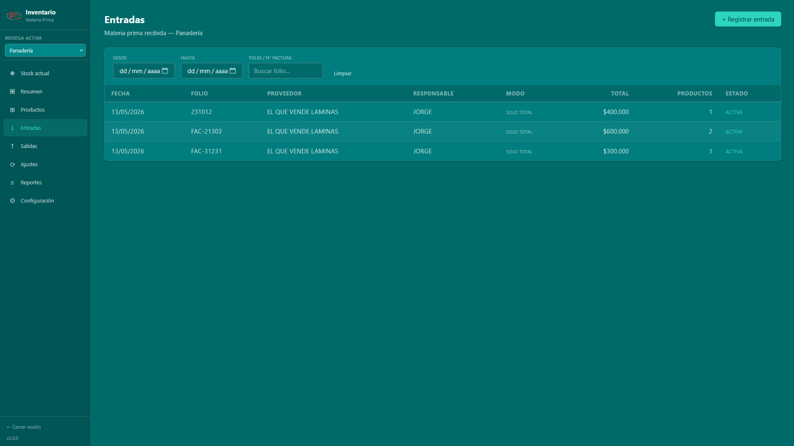
Al crear una entrada nueva, primero eliges entre dos modos:
Registras cantidades de productos + el total de la factura. No detallas precio por línea ni IVA por producto. Es el modo más rápido cuando no te importa el desglose.
Cada producto lleva su precio, su IVA y se calcula automáticamente el total línea. Es el modo recomendado si tu administración necesita el detalle de costos.
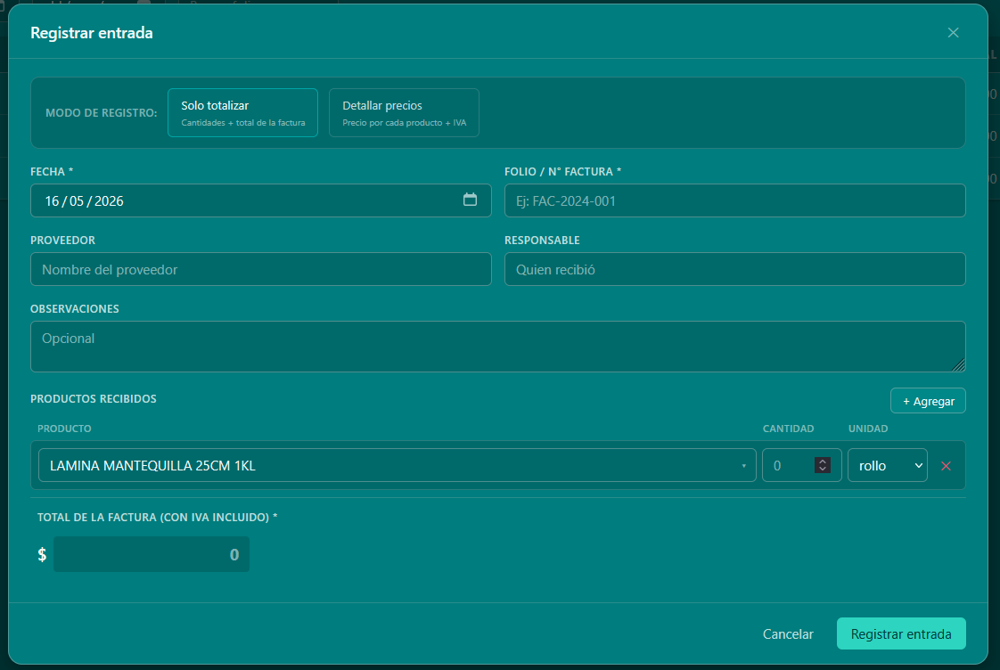
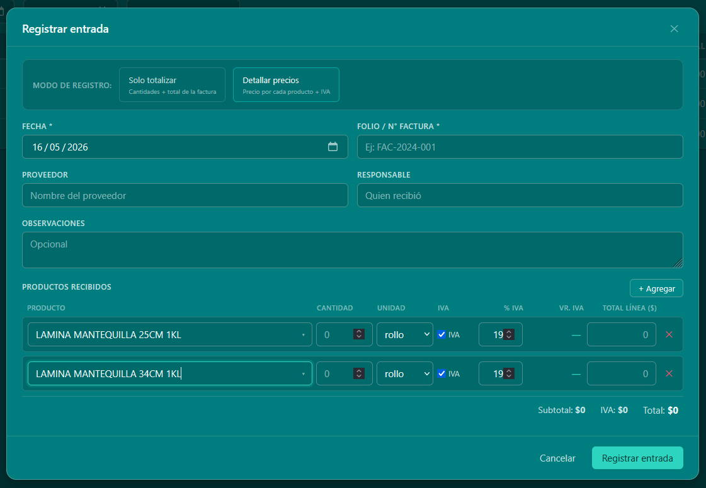
| Campo | Detalle |
|---|---|
| Fecha * | Día en que se recibió. Por defecto trae la fecha de hoy |
| Folio / N° factura * | Obligatorio. Es el número que viene en la factura del proveedor |
| Proveedor | Nombre del proveedor (opcional pero recomendado) |
| Responsable | Quién recibió la mercancía |
| Observaciones | Notas libres (estado de la mercancía, etc.) |
| Productos recibidos | Botón + Agregar para añadir filas. Cada fila: producto, cantidad, unidad, e —si es modo detallado— IVA, % IVA, valor IVA, total línea |
Haciendo clic en cualquier fila de la lista se abre el detalle:
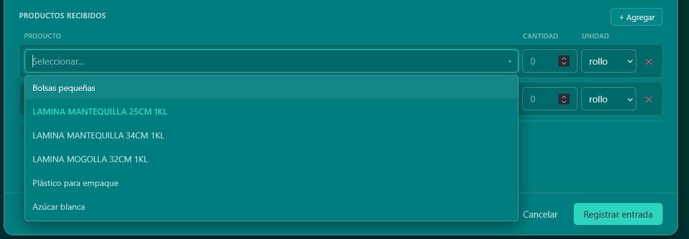
Desde el detalle puedes:
Aquí se registra todo lo que sale de la bodega: hacia producción, hacia el área de empaque, etc. Una salida descuenta del stock.
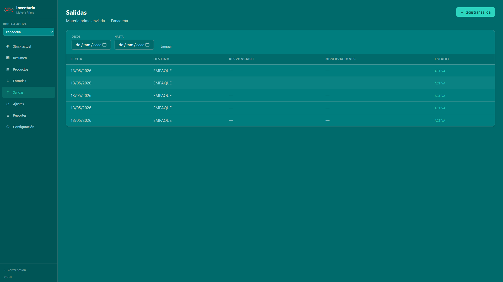
Antes de abrir el formulario, el sistema te pregunta "¿a qué área va?": Producción o Empaques. Solo te mostrará los productos de la categoría elegida en el formulario.
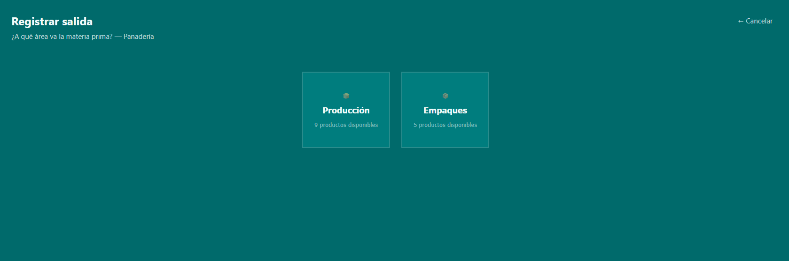
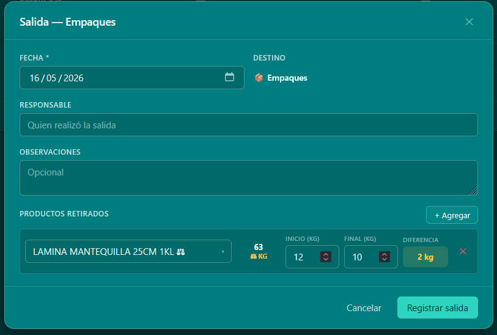
Columnas del formulario:
| Columna | Detalle |
|---|---|
| Producto | Buscador con autocompletado. Solo aparecen los productos de la categoría elegida |
| Stock | Te muestra cuánto hay disponible justo a tiempo, así sabes si alcanza |
| Cantidad | Lo que vas a retirar |
| Unidad | Operativa o base, según el producto |
| ✕ | Quitar esa fila |
Si eliges un producto marcado como "Salida por peso diferencial" (lleva el ícono ⚖ en el listado), las columnas cambian para mostrar:
Igual que en entradas: clic sobre una fila para ver el detalle. El rol admin puede anular salidas, lo que devuelve el stock al inventario.
Sirve para corregir diferencias entre lo que dice el sistema y lo que realmente hay en la bodega. Se hacen normalmente mensualmente o cuando se detecta una inconsistencia.
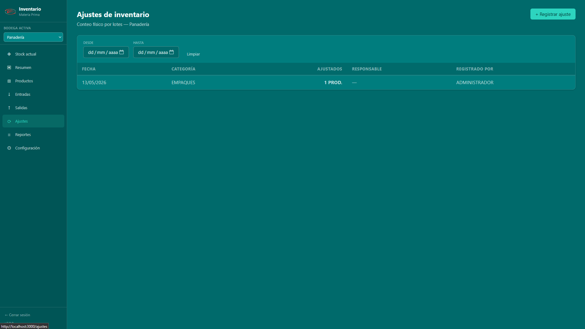
Los ajustes se hacen por lotes y por categoría: Producción o Empaques.
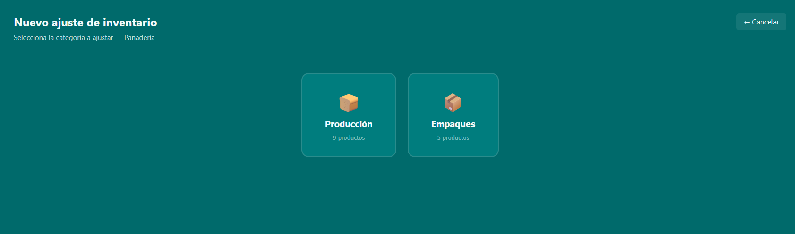
Aparece una tabla con todos los productos de la categoría. Para cada uno te muestra lo que el sistema cree que hay (Stock sistema) y un campo vacío para escribir lo que realmente contaste físicamente.
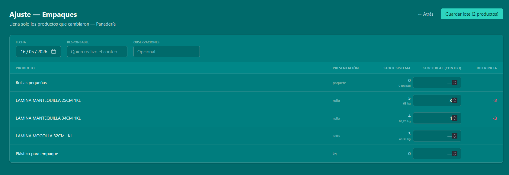
Tip importante: solo llenas los productos que cambiaron. Si un producto no tuvo diferencia, lo dejas vacío. El botón "Guardar lote" arriba te dice cuántos vas a ajustar.
La columna "Diferencia" se calcula sola y se pinta:
Haciendo clic en un lote ya guardado, se abre un modal con el detalle completo: qué productos se ajustaron, sistema vs real, diferencia. Desde ahí se puede exportar a Excel o PDF.
El módulo más potente para análisis y entregas administrativas. Permite generar 8 tipos de reportes distintos y exportarlos a Excel o PDF.
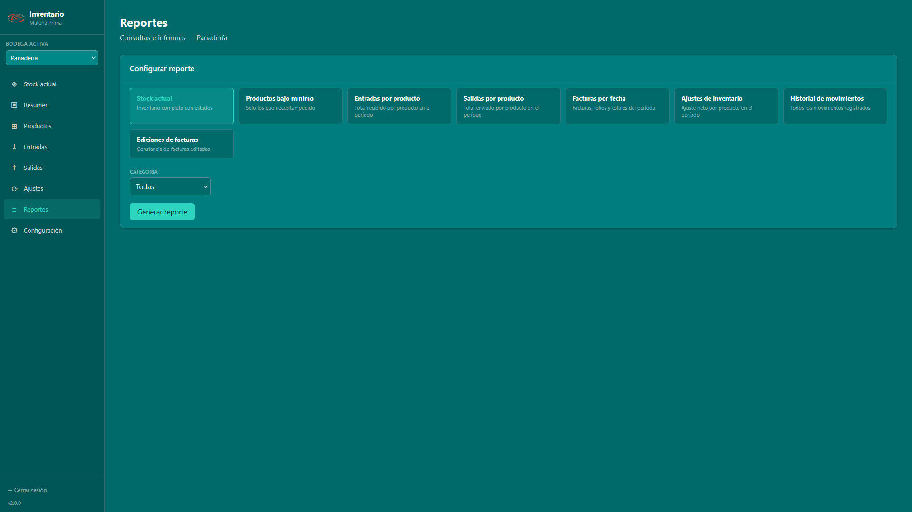
| Reporte | Para qué sirve |
|---|---|
| Stock actual | Inventario completo con estados. Útil para entregar resumen de bodega |
| Productos bajo mínimo | Solo los productos que necesitan pedido. La "lista de compras" |
| Entradas por producto | Cuánto se recibió de cada producto en un período. Balance por producto |
| Salidas por producto | Cuánto salió de cada producto en un período |
| Facturas por fecha | Listado de facturas (folio, proveedor, total) por rango de fechas |
| Ajustes de inventario | Ajuste neto por producto en el período (sobrantes / faltantes) |
| Historial de movimientos | Cada movimiento (entrada, salida, ajuste) en una sola lista cronológica |
| Ediciones de facturas | Auditoría: qué facturas fueron editadas, por quién y cuándo |
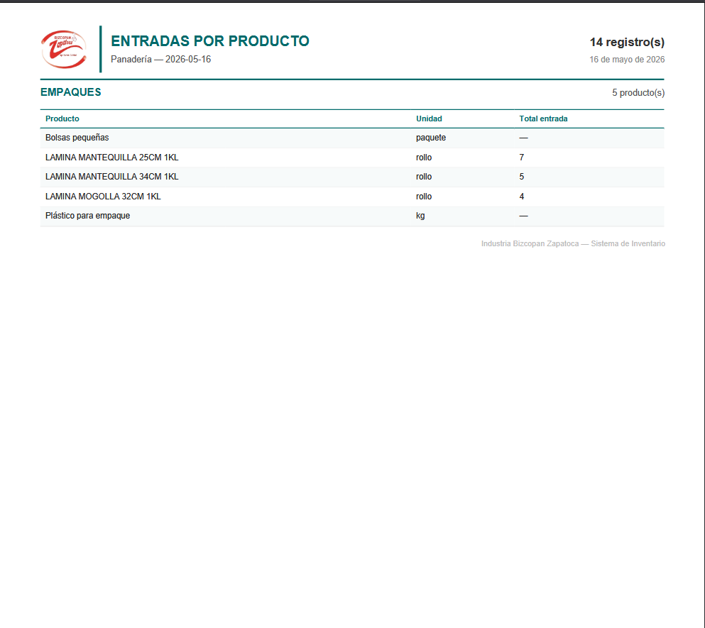
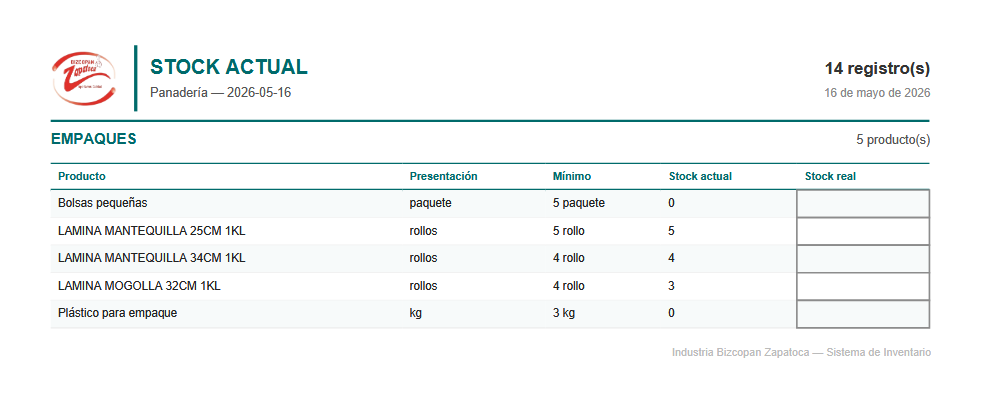
Aquí se administra el sistema en general. La sección de Usuarios es exclusiva del rol admin.
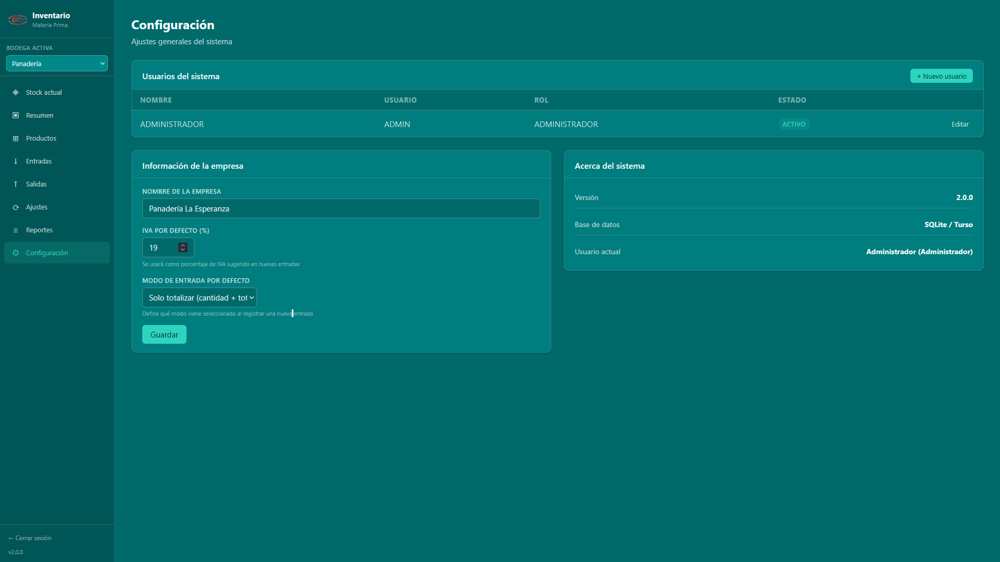
Permite crear, editar, activar/desactivar usuarios.
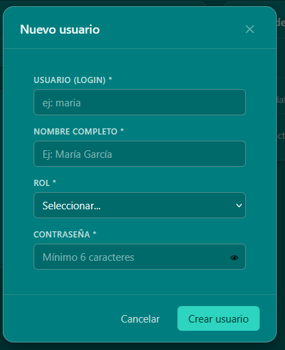
Campos:
Muestra la versión, la base de datos en uso y el usuario actualmente logueado.
Las tareas más comunes, de principio a fin
Supón que llega el camión del proveedor con harina, levadura y azúcar, con la factura física en mano.
El panadero te pide harina, levadura y mantequilla para preparar la masa del día.
Para empaques con rollos (peso diferencial):
Una vez al mes (o cuando lo defina la administración) se hace un conteo físico para verificar que el inventario del sistema coincida con lo real.
Te piden el detalle de cuánta harina se consumió el mes pasado.
salidas_FECHA.xlsx o .pdfC:\Users\TuUsuario\Downloads). Si quieres cambiarlo, configura la carpeta de descargas
desde el navegador.
Las dudas más comunes y cómo resolverlas
Ve a Entradas, haz clic en la fila incorrecta y se abre el detalle. Si tu rol es admin u operador, verás el botón Editar. Modificas lo que necesites y guardas. El sistema registrará automáticamente quién editó qué y cuándo (queda en el reporte de auditoría).
Solo el rol admin puede anular. Ve al detalle de la entrada y pulsa Anular. Esto devuelve el stock al estado previo y marca la entrada como anulada (queda en gris en la lista). Después, registra una nueva con los datos correctos.
Haz un ajuste. Ve a Ajustes → + Registrar ajuste → elige la categoría → completa la columna "Stock real" solo para el producto problemático → guarda. El sistema dejará constancia del faltante o sobrante.
Tres formas:
No los borres. Ve a Productos, ubica el producto y pulsa Desactivar. Así dejan de aparecer en las listas pero su historial se conserva intacto para reportes pasados.
Sí, puedes editarlo y los movimientos anteriores siguen referenciando al mismo producto. Pero ten cuidado al cambiar el factor de conversión o la unidad base de un producto con movimientos: las cantidades existentes no se recalculan.
Tres posibles razones:
El sistema soporta múltiples usuarios trabajando simultáneamente. Cada entrada queda asociada al usuario que la creó y los stocks se actualizan de forma segura uno a uno. No te tienes que preocupar por colisiones.
En Reportes → Historial de movimientos verás cada movimiento con la columna del usuario que lo registró. Para las ediciones/anulaciones de entradas, usa el reporte "Ediciones de facturas".
No. El sistema corre en la nube (base de datos Turso) y los datos están centralizados. Desde cualquier computadora con conexión a internet, entras con tu usuario y verás todo igual.
Solo el administrador puede cambiarla por ahora. Pídele a quien tenga rol admin que te la actualice desde Configuración → Usuarios → Editar → Nueva contraseña.
Términos del sistema explicados
| Término | Significado |
|---|---|
| Ajuste | Corrección manual del stock por conteo físico. Hace que el sistema refleje la realidad |
| Anular | Marcar un registro como inválido sin borrarlo. Revierte el efecto en el stock |
| Auditoría | Registro automático de quién hizo qué cambio y cuándo. Imborrable |
| Bodega | Cada uno de los almacenes físicos del sistema: Panadería o Pastelería |
| Categoría | Tipo de producto: Producción (materia prima del pan) o Empaques (envolturas) |
| Combobox | Lista desplegable con búsqueda al escribir. Aparece al elegir productos |
| Conteo físico | Acto de ir a la bodega y contar realmente cuánto hay. Se usa para hacer Ajustes |
| Entrada | Registro de mercancía recibida del proveedor. Suma al stock |
| Factor de conversión | Número que dice cuántas unidades base hay en una unidad operativa. Por ejemplo: 50 si 1 bulto = 50 kg |
| Folio | Número de factura / identificador único del proveedor. Obligatorio en entradas |
| IVA por línea | Cada producto en una entrada puede tener su propio IVA, no uno único para toda la factura |
| Lote (de ajuste) | Un conteo físico hecho en una fecha, agrupando varios productos. Se guarda como un solo registro |
| Modo de entrada | Forma de registrar una entrada: Solo totalizar (rápido) o Detallado (con precio por línea) |
| Movimiento | Cualquier cambio de stock: entrada, salida o ajuste. Queda en el historial central |
| Producto por peso | Empaques (típicamente rollos) cuya cantidad consumida se calcula pesando antes y después. Tienen el ícono ⚖ |
| Rol | Permisos del usuario: admin, operador, entradas o salidas |
| Salida | Registro de mercancía que sale de bodega (a producción, empaque, etc.). Resta del stock |
| Stock actual | Cantidad real disponible de un producto en este momento, en la unidad base |
| Stock crítico | Estado de un producto cuyo stock es ≤ 50% del mínimo. Color rojo |
| Stock bajo | Estado de un producto cuyo stock es ≤ mínimo pero > 50% del mínimo. Color amarillo |
| Stock mínimo | Umbral configurable por producto. Si el stock baja de ahí, se activa la alerta |
| Unidad base | Unidad pequeña de seguimiento interno: kg, gramos, unidades, ml |
| Unidad operativa | Unidad cotidiana con la que se piensa el producto: bulto, caja, paquete, rollo |